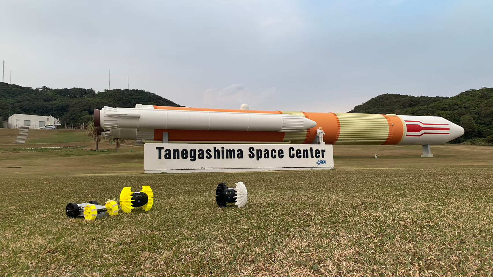
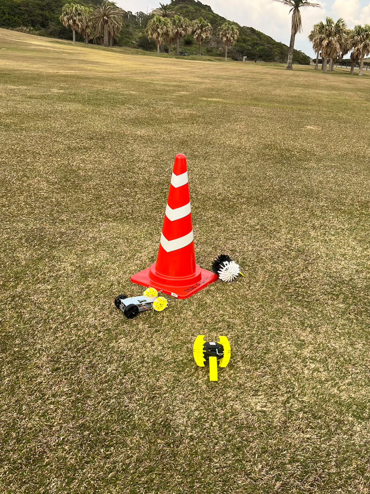
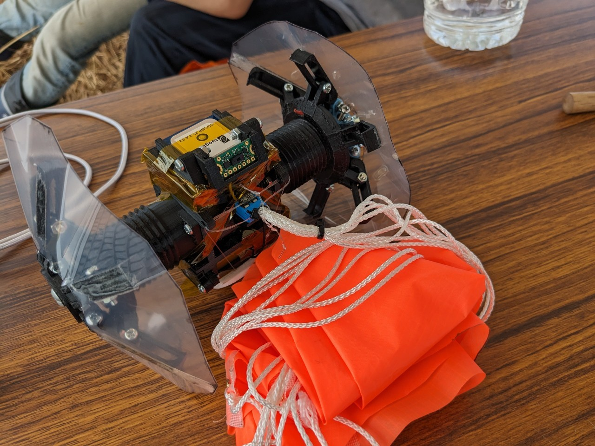
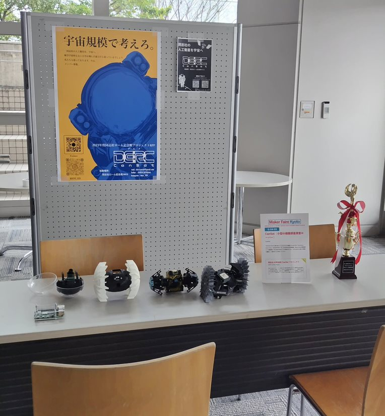

同志社の人工衛星を宇宙へ




DERC CanSat
は、
同志社大学で航空宇宙分野のものづくりに興味のある学生が集まって活動しているプロジェクトです！
超小型人工衛星の設計や共同実験・大会に向けてのCanSat(模擬惑星探査ローバー)の開発など、実際の人工衛星を作れるようになるための活動を行っています。
大学宇宙工学コンソーシアム(UNISEC)加盟団体です。
CanSatとは？
CanSatは、缶サイズの超小型模擬人工衛星の総称です。航空宇宙分野の教育を目的として、人工衛星の要素技術を用いて開発されています。
近年は、共同実験・大会のレギュレーションの変化などから、模擬惑星探査ローバーという位置づけになっています。
メンバー募集！
私たちと一緒に活動しませんか？
何も分からなくても大丈夫！
学校法人同志社の学生であれば、誰でも参加できます。
いつでも
見学・参加希望
お待ちしております。
ご支援のお願い
小型人工衛星、模擬惑星探査ローバーの開発には、資金・設備が必要です。当団体は、歴史が浅いこともあり、資金の調達に苦労している状況にあります。ぜひご支援いただけますと幸いです。